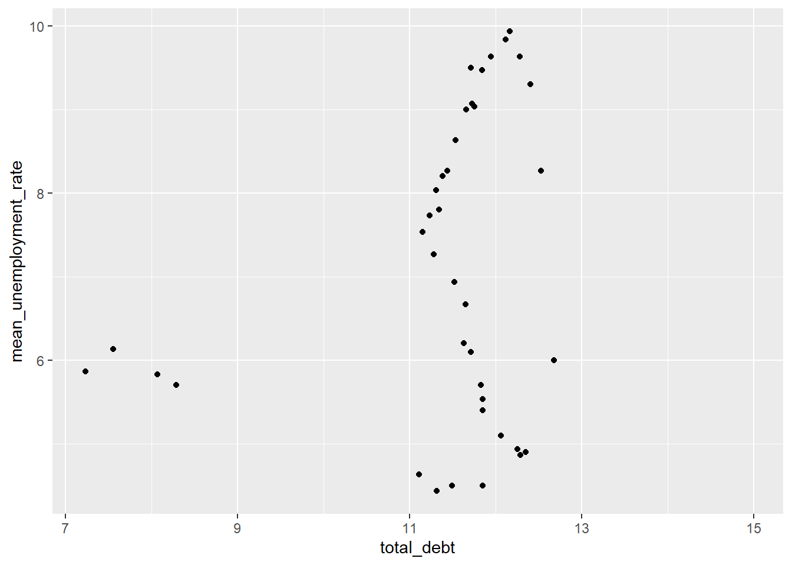

library(tidyverse)
library(ggplot2)
library(readxl)
knitr::opts_chunk$set(echo = TRUE, warning=FALSE, message=FALSE)Challenge 8
challenge_8
debt
fed_rates
laurenzichittella
Joining Data
Read in data
I will import and combine the federate fund rate and debt datasets to evaluate the relationship between GDP and debt by type throughout calendar year 2003.
The FedFundRates data set provides different measures of economic conditions in the US between July 1, 1954 and March 16, 2017. After tidying, each observation will represent a measurement type, value, and date of collection.
The debts data set provides debt in trillions in the United States between Q1 2003 and Q2 2021. In this data set, a case will represent a single measure of debt by type and quarter/year of collection.
# Create raw dataframes
fedfundrate_raw <-read_csv("_data/FedFundsRate.csv"
, skip =1
, col_names = c("year", "month", "day", "del_fedfunds_targetrate", "del_fedfunds_targetupper", "del_fedfunds_targetlower","del_fedfunds_effectiverate", "del_realgdp_percentchange", "unemployment_rate", "inflation_rate")) %>%
select(!contains("del"))
print(summarytools::dfSummary(fedfundrate_raw,
varnumbers = FALSE,
plain.ascii = FALSE,
style = "grid",
graph.magnif = 0.70,
valid.col = FALSE),
method = 'render',
table.classes = 'table-condensed') Data Frame Summary
fedfundrate_raw
Dimensions: 904 x 5Duplicates: 0
| Variable | Stats / Values | Freqs (% of Valid) | Graph | Missing | ||||
|---|---|---|---|---|---|---|---|---|
| year [numeric] |
|
64 distinct values |  |
0 (0.0%) | ||||
| month [numeric] |
|
12 distinct values |  |
0 (0.0%) | ||||
| day [numeric] |
|
29 distinct values |  |
0 (0.0%) | ||||
| unemployment_rate [numeric] |
|
71 distinct values |  |
152 (16.8%) | ||||
| inflation_rate [numeric] |
|
106 distinct values |  |
194 (21.5%) |
Generated by summarytools 1.0.1 (R version 4.2.2)
2023-04-27
#debt
debt_raw<- read_excel("_data/debt_in_trillions.xlsx")
print(summarytools::dfSummary(debt_raw,
varnumbers = FALSE,
plain.ascii = FALSE,
style = "grid",
graph.magnif = 0.70,
valid.col = FALSE),
method = 'render',
table.classes = 'table-condensed') Data Frame Summary
debt_raw
Dimensions: 74 x 8Duplicates: 0
| Variable | Stats / Values | Freqs (% of Valid) | Graph | Missing | |||||||||||||||||||||||||||||||||||||||||||||||||||||||
|---|---|---|---|---|---|---|---|---|---|---|---|---|---|---|---|---|---|---|---|---|---|---|---|---|---|---|---|---|---|---|---|---|---|---|---|---|---|---|---|---|---|---|---|---|---|---|---|---|---|---|---|---|---|---|---|---|---|---|---|
| Year and Quarter [character] |
|
|
 |
0 (0.0%) | |||||||||||||||||||||||||||||||||||||||||||||||||||||||
| Mortgage [numeric] |
|
74 distinct values |  |
0 (0.0%) | |||||||||||||||||||||||||||||||||||||||||||||||||||||||
| HE Revolving [numeric] |
|
73 distinct values |  |
0 (0.0%) | |||||||||||||||||||||||||||||||||||||||||||||||||||||||
| Auto Loan [numeric] |
|
71 distinct values |  |
0 (0.0%) | |||||||||||||||||||||||||||||||||||||||||||||||||||||||
| Credit Card [numeric] |
|
69 distinct values |  |
0 (0.0%) | |||||||||||||||||||||||||||||||||||||||||||||||||||||||
| Student Loan [numeric] |
|
73 distinct values |  |
0 (0.0%) | |||||||||||||||||||||||||||||||||||||||||||||||||||||||
| Other [numeric] |
|
70 distinct values |  |
0 (0.0%) | |||||||||||||||||||||||||||||||||||||||||||||||||||||||
| Total [numeric] |
|
74 distinct values |  |
0 (0.0%) |
Generated by summarytools 1.0.1 (R version 4.2.2)
2023-04-27
Mutate variables and tidy data as needed
Since the plan is to join data sets by the measurement date variables will need to be created in both datasets.
Since I am only going to retain a single variable from the debt dataset, I will not tidy at this point in code
# Update and tidy fed funds
# Mutate to create new date variables
fedfundrate_mutate <-
fedfundrate_raw %>%
mutate('measure_date' = make_date(year = year, month = month, day = day),
'quarter' = quarter(measure_date),
'quarter' = as.double(quarter) ) %>%
select( -day)
# Pivot to one row per measure per measure date
fedfundrate_tidy <-
fedfundrate_mutate %>%
pivot_longer(cols = c("unemployment_rate", "inflation_rate"),
names_to = "measure_type" )
head(fedfundrate_tidy)# A tibble: 6 × 6
year month measure_date quarter measure_type value
<dbl> <dbl> <date> <dbl> <chr> <dbl>
1 1954 7 1954-07-01 3 unemployment_rate 5.8
2 1954 7 1954-07-01 3 inflation_rate NA
3 1954 8 1954-08-01 3 unemployment_rate 6
4 1954 8 1954-08-01 3 inflation_rate NA
5 1954 9 1954-09-01 3 unemployment_rate 6.1
6 1954 9 1954-09-01 3 inflation_rate NA # Update and tidy debt
# Mutate to create new date variables
debt_mutate <-
debt_raw %>%
separate('Year and Quarter', c("year", "quarter"), sep = ":Q") %>%
mutate_at(c('year', 'quarter'), as.numeric)%>%
mutate( year = year + 2000
, month = quarter*3
,'measure_date' = make_date(year = year, month = month, day =1))
head(debt_mutate) # A tibble: 6 × 11
year quarter Mortgage HE Revolvin…¹ Auto …² Credi…³ Stude…⁴ Other Total month
<dbl> <dbl> <dbl> <dbl> <dbl> <dbl> <dbl> <dbl> <dbl> <dbl>
1 2003 1 4.94 0.242 0.641 0.688 0.241 0.478 7.23 3
2 2003 2 5.08 0.26 0.622 0.693 0.243 0.486 7.38 6
3 2003 3 5.18 0.269 0.684 0.693 0.249 0.477 7.56 9
4 2003 4 5.66 0.302 0.704 0.698 0.253 0.449 8.07 12
5 2004 1 5.84 0.328 0.72 0.695 0.260 0.446 8.29 3
6 2004 2 5.97 0.367 0.743 0.697 0.263 0.423 8.46 6
# … with 1 more variable: measure_date <date>, and abbreviated variable names
# ¹`HE Revolving`, ²`Auto Loan`, ³`Credit Card`, ⁴`Student Loan`Join Data
I will utilize a left join, post filtering by year. I only want to retain records in debt or debt and federal funds
I’ll generate a quick scatter plot to see if there’s a correlation between debt and unemployment rating. Depending on these results, I’ll make a decision on next steps for tidying and graphing.
# Prep for merge, filtering to desired records and summarizing to get mean unemployment rate
fedfundrate_qtr <-
fedfundrate_tidy %>%
filter(year>2002 & measure_type =="unemployment_rate")%>%
group_by(year, quarter)%>%
summarise(mean_unemployment_rate= mean(value))
# Prep debt for merge, limiting to select variables and renaming to clearly represent value variable
debt_qtr <-
debt_mutate %>%
select(year, quarter, Total) %>%
rename(total_debt = Total)
head(fedfundrate_qtr)# A tibble: 6 × 3
# Groups: year [2]
year quarter mean_unemployment_rate
<dbl> <dbl> <dbl>
1 2003 1 5.87
2 2003 2 NA
3 2003 3 6.13
4 2003 4 5.83
5 2004 1 5.7
6 2004 2 NA #Left join fed fun to qtr - expect the rowname of resulting dataset to be same as table debt that is being left joined to
rate_debt <- left_join( debt_qtr
, fedfundrate_qtr
, by = c("year", "quarter"))
# Sanity check
nrow(debt_mutate)[1] 74 nrow(rate_debt)[1] 74 rate_debt# A tibble: 74 × 4
year quarter total_debt mean_unemployment_rate
<dbl> <dbl> <dbl> <dbl>
1 2003 1 7.23 5.87
2 2003 2 7.38 NA
3 2003 3 7.56 6.13
4 2003 4 8.07 5.83
5 2004 1 8.29 5.7
6 2004 2 8.46 NA
7 2004 3 8.83 NA
8 2004 4 9.04 NA
9 2005 1 9.21 NA
10 2005 2 9.49 NA
# … with 64 more rows# Scatter plot - noting lots of missing unemployment rate for select spans of time. Results will likely be weird
ggplot(rate_debt, aes(x=total_debt, y=mean_unemployment_rate)) +
geom_point()
Conclusion
In this exercise, I wanted to try a join by, rather than stacking datasets. However, if I were focused on interpretting the data sources better, I would likely stack tidy versions of these data and plot faceted line graphs by type of measure to look at trends over time and compare the two